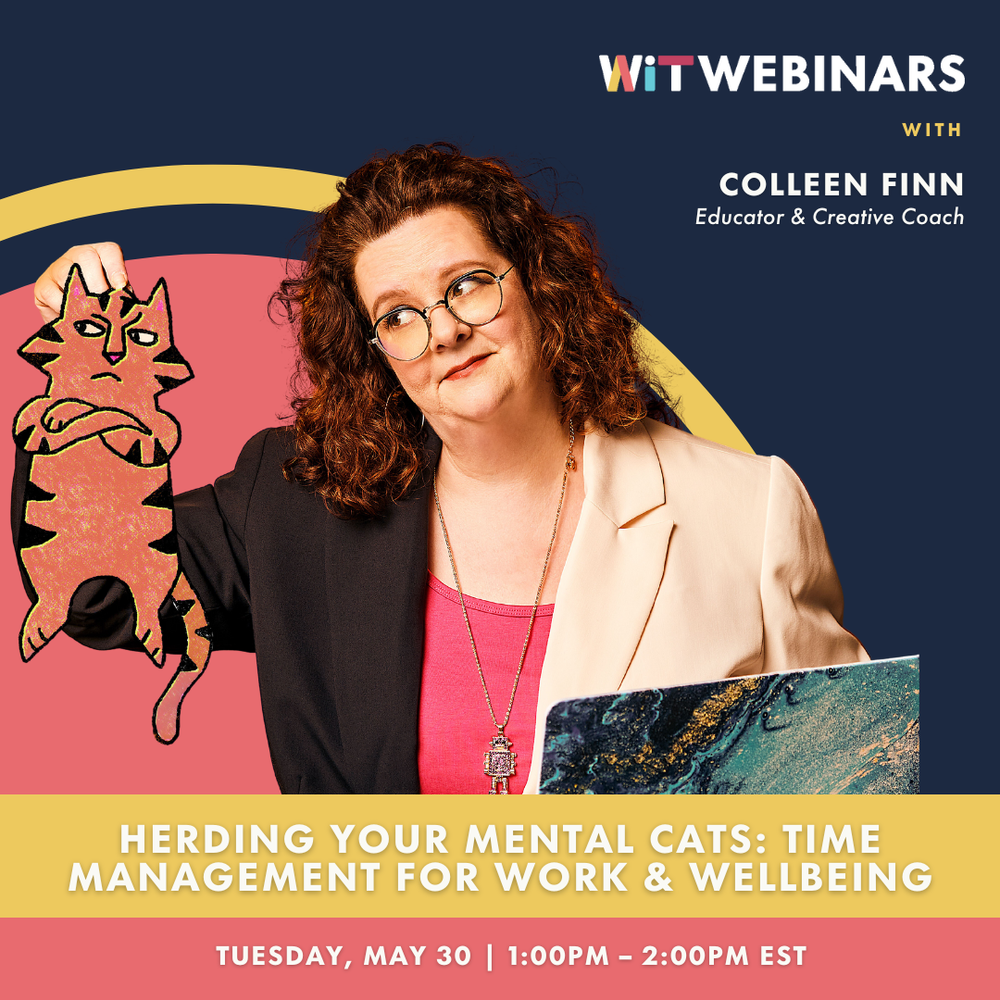

Industry Event Assignment
Zach Lebowitz
4/22/24

Time Management: Herding your Mental Cats
For my industry event, I attended an online event on Design Discourse called “Time Management: Herding your Mental Cats”, hosted by professional graphic designer, illustrator, and design instructor Colleen Finn. In the following I will summarize key points of what I understood from her event.
The main premise of her presentation was time management for those within any creative field, even above the prospects of design. She began talking about her own experiences trying to manage time throughout her life throughout her numerous experiences in creative careers, as well as the issues students encountered with having so many ideas, yet finding difficulty in feeling as though they would amount to their potential. From this, Colleen suggests creating a system, which becomes a game changer for efficiency for anyone wishing to pursue goals within the realm of art-based careers. To create this system, the prospect of “Herding your mental cats” arrives.
Introduction
Herding your mental cats means to create a character in your head (her’s being a “moody tiger” character”), to represent and personify the overactivity a creative designer's brain may encounter. Creativity is described as coming up with novel solutions to problems, in ways you did not hear elsewhere. And with this, some of said novel solutions might not always be the most effective ones, and when this happens one can spiral and feel like nothing they do will be successful in general, and grow a cloud of self doubt. This situation is brought upon by your over-active “moody tiger”, it is your brain’s freedom letting itself run wild, in ways that become overstimulating. So to counter this, one must befriend this moody tiger, rather than fight it. You will never win a fight against a tiger, and a lot of that activity is what makes you able to come up with good ideas in the first place too. So utilizing your tiger when you need to, while recognizing when you need to give him a time out when that energy is unwanted, is important.
This is tied into one’s depression and loss of motivation one can feel when working in these, or any field really. And when this depression arises, it was suggested to reframe your thought process in two ways:
- Changing your language from I am depressed to I feel depressed.
You are the sky, and depression and all the obstacles you’ll ever face are just clouds. Some are dark and stormy, yet just like your depression, they will always go by. And you know this is true, because if this kind of depression were to actually last forever and it were what you are, it would have always been there in the first place, which is simply not the case. Another language change that coincides with this, is referring to the end time of your work projects as a “finish line” rather than a “deadline”, as to present a positive inclination towards your goals, within your current emotional state during these hardships as well.
- Your tiger is a liar.
You believe it because you are in it. When you get self doubts that lie to you about how “bad” you are at everything, it is important to understand why these lies are happening, and to not let it “run your show”. Even if a day may be one in which you simply cannot remove the fog this creates, understand what that fog is, take a break, and you’ll be able to get back into your work in full force the next day.
With this, if one is having a panic attack with this overwhelming feeling, she suggests looking around and touching something physical. It could be a fidget device or it could even be your chair, but just ground yourself in reality, can help one calm down.
Time Management
Time management is described as basically giving you this kind of control over your life. Giving you time to observe reality as it is, and not let the stress of being a human overwhelm you. You’ll be more efficient in your own work, and projects with others, interruptions will not snowball into catastrophic mountains that thrust you behind, and you’ll actually be able to relax at the end of the day, instead of worrying about whatever could be next.
And Colleen proposes four steps to properly manage time efficiently and wholeheartedly:
- Creating time management systems.
- Time blocking
- Prioritization
- Plain ol’ scheduling.
88% of people were said to use a to-do list, but only 12% say they have a time management system. Colleen, in this seminar, offers hers.
All you need is post-it notes, a pen, a blank wall, and their brain to follow these steps:
- Step 1:
Set up the days of the week. Put up 7 post-its horizontally on your wall, denoting each weekday. Start on Monday and go left to right. This will be the base of your format, and will not change as it is the overall outline for the system.
- Step 2:
List out your projects. Say we have to do children’s book illustrations, logo design projects, and a calligraphy project. Take all three of those, and assign a different colour of sticky note to them. Let’s say: The children’s book project is blue, the calligraphy project is pink, and the logo design project is yellow. This will come in handy when you put the tasks you need to do for each project on the wall. As so when you see the wall, the human brain will immediately recognize the colours. For example we could see that there is a lesser number of blue on the wall than yellow, indicating that we have less children’s book work to do, than logo design.
- Step 3:
Break the projects down. When one does this, everything becomes less daunting. For the children’s book, let’s say one would need to make a sticky note for “Scan Sketches”, “texture”, “Set up psd files”, “Shadows”, “Flats”, “Highlights”, “Outlines”, “Save Files”, and finally “Email to client”. When breaking down tasks, it is said by Colleen to make sure to create as many tasks as possible, as to give yourself more accomplishment and make finishing an objective feel like less of a chore with the smaller scale nature of each.
- Step 4:
Add a time for each task in the lower left hand corner of each sticky note, For example ‘scan sketches” would be 30 minutes, etc. Make sure no post-its are over 4 hours in length, try to figure out how to break it down even further if you end up creating an over four hour task. And with that, no post-it should be less than 30 minutes. This is because nothing one does that requires this system may take less than 10 minutes, and Colleen suggests to always multiply whatever amount of time you’ll think something may take, by 3 to account for potential distractions (getting a phone call, technical problems, etc). Understand that some asks from a person are unreasonable, and one cannot reasonably do 20 hours of work in a day. And, if there is time left over, use this to either cash in and keep working on the next project until you finish early, or practise “diffused pondering”, where you can brainstorm and come up with your best ideas. Creatives are always working with figuring out new solutions or concepts using “their tiger”, so dedicating time for this to be utilized properly is quite helpful.
- Step 5:
Label tasks with priority. In a corner of a note, put A, B or C to denote which ones are of the most, middle or lesser importance. Try for the most difficult tasks first. Eat the frog first. You’ll have more fun when the fun cannot be interrupted by the hard work afterwards, once one gets to the easier or more enjoyable tasks.
- Step 6:
Finally, plan out your week. Get all the sticky notes on the wall, and put a reasonable number of tasks under each day of the week. This will also include certain things you cannot move such as a doctor’s appointment. These will be their own dedicated color. She also puts very few tasks of the same colour (project) back to back to keep one engaged. Although it may take a while for one’s brain to switch gears into a given project, 17 minutes on average, so accounting for this time is a definite help as well.
There is also a final, bonus, ingredient to all of this: Don't treat all mental hours the same. Trying to do creative things during your bad “good luck getting work hours” when your “tiger” is napping will actually take more time. This just wastes time in the wrong headspace, so try to do more straightforward work that requires less creativity then. And likewise, dedicating your good “speedy tiger” hours to creativity will work in tandem with this, ensuring you are utilizing the right hours of the day to get more inventive kinds of work done. The average amount of work people do in an 8 hour work period is actually said to be only 3 hours and forty five minutes of work, so Colleen suggests to not overbook yourself, and know when and how you can use your “speedy tiger” hours well. When this is all set and done, every time you complete a post-it, don’t throw it out, put it aside in a stack and see your achievements at the end of the day.
After telling us this, Colleen Finn explained why specifically she does this on handwritten post-it notes. This is because your hippocampus, where your memories are stored, is going to be more engaged and retain knowledge more thoroughly with physically written ideas, as writing or drawing is a much less repetitive motion than typing and creates more unique engagement in your brain. This is why even drawing pictures for notes can help you remember better, even if the pictures are unrelated. She talked of how she would draw small doodles in her sketchbook to help her remember what was said in meetings at different points of her career, simply due to the power of physical writing and drawing in regards to memories this way. For example she remembered a certain point of a speaker by looking at her notes and remembering “oh you were talking about X while I was drawing the unicorn”. So physical writing certainly is an important piece to all of this, which further enables the creative spark one so frequently employs as a designer.
Conclusion
At the end, she describes how this might not solve everything for everyone, with the immense variety in what may help for people. But by enacting these key points in one’s life, and maybe just trying this for an experiment, people can get in the correct mindset to accomplish what they need to, both within their creative design careers, and their lives in general, as they take back control of their creative opportunities via organized motivation.
For more information from Colleen Finn herself, visit her next seminar.